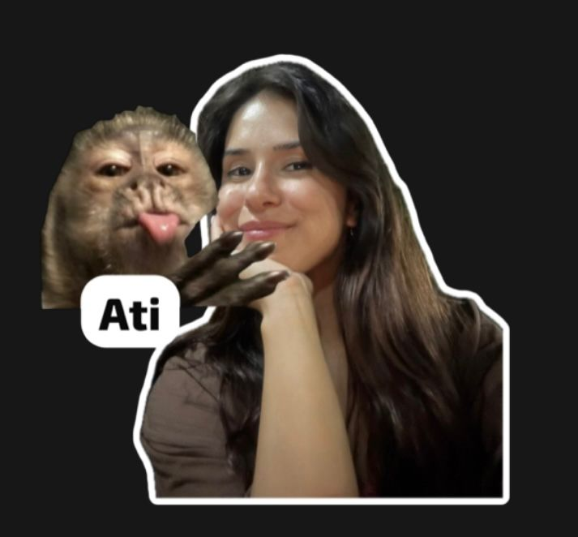

Her şey ilkokul sıralarında başladı. O küçücük hallerimizle birbirimizi tanıdık, oyunlar oynadık ve hayatımızın bu kadar kesişeceğini bilemezdik. O masumiyet dolu yıllar, bugünkü sevgimizin temeli oldu.
Hayatımın en güzel anılarına "çocukluk dönemi" ortak olan, beni tekrardan hayata döndüren en değerli varlığımsın.

Her şey ilkokul sıralarında başladı. O küçücük hallerimizle birbirimizi tanıdık, oyunlar oynadık ve hayatımızın bu kadar kesişeceğini bilemezdik. O masumiyet dolu yıllar, bugünkü sevgimizin temeli oldu.

Yıllar sonra bir otobüste, şans eseri yeniden karşılaştığımızda kalbim duracak gibi olmuştu. Sanki zaman hiç geçmemişti. O an, bir otobüs yolculuğunu hayatımın en güzel macerasına çevirmiştin.


O gün çok heyecanlıydım... ilk kez çiçek gönderiyordum. Telefonun başında heyecanla beklerken, o anın ne kadar özel olacağını düşündüm. Çiçekler ulaştığında.Beni aradığında ki ses tonun benim için hayattaki en kıymetli anlardan biriydi. O gün, seni ne kadar çok sevdiğimi bir kez daha anlamıştım

Hikayemiz sadece Ezgi ve benden ibaret değil. İlkokul yıllarımızda bizi sürekli güldüren, bizimle oyunlar oynayan ve her zaman yanımızda olan bir kahraman vardı: Ezgi'nin babası Ali Amca. O, daha o zamanlarda bile benim için çok özeldi. O günlerde ne kadar büyük bir aile olacağımızı bilemezdik ama o sıcak anılar, bugünkü ilişkimizin ne kadar sağlam temeller üzerine kurulduğunu gösteriyor. Ali Amca, benim için her zaman özel bir yerde kalacak.

O gün hayatımın geri kalanını şekillendirecek ilk adımı atmıştım. Buluşma yerine giderken kalbim yerinden çıkacak gibiydi. Seni gördüğüm o ilk an, sanki dünya durmuş gibiydi. Ne diyeceğimi bilemedim, sadece gülümseyebildim. O günden sonra her şey değişti. O ilk buluşma, aramızdaki bağın ne kadar özel ve güçlü olacağının ilk işaretiydi.